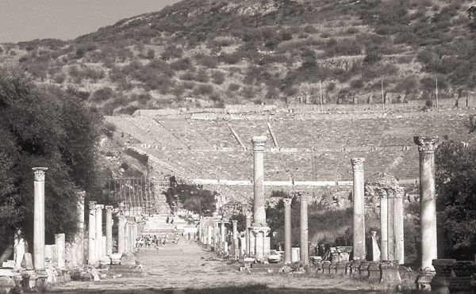
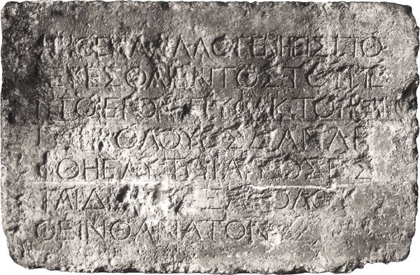

The document we know as Paul’s letter to the Ephesian Christians stands at the threshold of a period during which the church began to emerge as a social and intellectual force in the Greco-Roman world. The letter is centered on a theme that both reflects the earlier letters of Paul and points forward to the problems that would confront the church increasingly in the coming decades and centuries, namely, the universal significance of God’s act in Christ.
On the one hand, in Christ the division of humanity into Jew and Gentile has been rendered moot, since God has intended Christ to be the way of salvation for all people, Jew and Gentile alike. Ephesians thus shares the theme Paul developed in Romans, although the conflict between Christians of Jewish and Gentile origins that dominates Galatians and is reflected in Romans has begun to fade. There is no reference to that conflict in Ephesians.
On the other hand, the universal significance of God’s salvific act in Christ brings the Christian community into confrontation with the worldview of the Greco-Roman world. The universality of the meaning of Christ is expressed not only in its destruction of the barrier between Jew and Gentile but also in its challenge to all attempts to understand the world in terms of a multitude of spiritual powers and divine beings. Ephesians proclaims that Christ is the ultimate ruler of all other powers in the whole of creation and thus is sovereign over all creation, both natural and supernatural. There is therefore no area of culture or religion that God’s act in Christ has not affected. Christ is the supreme head of created reality, and all powers that inhabit creation owe him fealty and are subordinated to him. This implication of Christ’s universality, already hinted at in Romans, 1 and 2 Corinthians, and Galatians, now emerges as a theme that runs through the letters we are about to consider — Ephesians, Philippians, and Colossians.
The opening words of this letter identify its recipients and the author, but represent a puzzle for a variety of reasons.
First, was it written to the Christians in Ephesus? There are several reason why that does not seem to be the case:
• In the earliest manuscripts we have of this letter, the phrase “in Ephesus” is absent from the letter opening (1:1). This means in all likelihood that the phrase was missing from the original form of the letter. It is highly unlikely that a scribe copying this letter would omit “in Ephesus” from the letter if it were present.
• It is apparent from such statements as those contained in 1:15; 3:2; and 4:21 that the author has no firsthand knowledge of the Christian community being addressed. The author knows them only at second hand. But both Paul (1 Cor 16:8) and Acts (19:1–20) affirm that Paul went to Ephesus. According to Acts, although Paul was not that church’s founder, he stayed there some three years evangelizing the area. In 1 Corinthians, Paul notes his opportunity for continuing effective work there. It is unlikely, therefore, that Paul wrote this letter to the Ephesian church, a community he knew.
• There are no references in the letter to any events that occurred during Paul’s time in Ephesus, nor are there any greetings to people in Ephesus that Paul knew or from people with Paul who knew people in Ephesus. If Paul had been there three years, such an omission is hard to fathom. The only person mentioned is Tychicus, who carries the letter to Ephesus and will tell the Ephesians more about Paul, a typical procedure in the Hellenistic world.
To whom, then, was the letter originally addressed? Some have suggested it is the letter to the Laodiceans mentioned in Col 4:16, where the Colossians are to exchange letters from Paul with Laodicea, but there is no mention of such an exchange in Ephesians. Marcion, an early collector of Paul’s letters, knew of a Letter to the Laodiceans; Tertullian, an early church father, accused Marcion of changing Ephesians into Laodiceans. Yet there is no manuscript evidence that “in Laodicea” ever stood in the letter opening of what we know as the letter to the Ephesian church.
It may be that, like 1 Peter, Ephesians was originally a letter to more than one church, but that, unlike 1 Peter, a designation was not included, so that the churches that received it would know it was a general letter also intended for them. The phrase “in Ephesus” may then be due to an early scribe combining the information that Tychicus delivered the letter (Eph 6:21) with the note in 2 Tim 4:12 that Paul had sent Tychicus to Ephesus. That remains speculative, however. About all we can say with any degree of confidence is that the letter was not originally addressed to the Christians in Ephesus.

The theater and the road from the harbor in Ephesus (Phoenix Data Systems, Neal and Joel Bierling)
The second question is: Did Paul write this letter? If we could be sure that the letter was addressed to Ephesus, we could be equally sure that Paul did not write it, since the letter assumes that Paul did not know the church there, when in fact he did. But there is other evidence that appears puzzling if Paul is the author of this letter in the same way that he is the author of, say, Romans or Galatians.
• Perhaps most importantly, the style of Greek in which Ephesians is written is noticeably different from that of Paul’s major letters (Romans, 1 and 2 Corinthians, and Galatians). Ephesians has long, rambling sentences, written in an almost liturgical style, and employs the genitive case far more frequently than the major letters. The first chapter, for example, consists of just two sentences after the letter opening (vv. 3–14 and 15–23); English translations usually break them up into shorter sentences, thus obscuring the difference from the other Pauline letters. To be sure, Paul could also write long sentences and did so in his other letters, but he did not write such sentences so frequently and with the kind of grammatical constructions found in this letter.
• There are enough literary similarities between Ephesians and Colossians that it appears that the author of Ephesians knew and depended on Colossians, for both many of the ideas and some of the language employed in Ephesians.
• Ephesians also has a number of words that do not appear in the other Pauline letters, and many key phrases that Paul uses do not occur in Ephesians, but this is not so important for determining the identity of the author as are the differences in style and grammatical usage.
None of these arguments will be convincing to those who insist Paul must have written the letter since his name appears on it or otherwise the letter is based on a lie. Yet ancient custom does not support such an assertion. In fact, according to Greco-Roman practice, if one got one’s ideas from another, custom demanded that the writing identify the source of those thoughts as the document’s author. It was considered dishonest to do otherwise. Given the differences in style and to some extent content, it seems quite likely that a follower of Paul is responsible for the composition of this letter, in which the key themes of Paul’s letters, and hence of his thought, are presented, perhaps even, as some scholars have suggested, as a summary of his thought or an introduction to a collection of his letters. Such a person would then have been obliged to identify Paul as the source of the letter by attributing it to him.
None of this means the letter lacks importance for a study of Paul’s thought and of the theology of the NT. Twenty centuries of Christians have found Ephesians useful for the life of the church, and its content retains its validity regardless of who set it down. The letter is an excellent summary of Paul’s thought about the universal significance of the Christian faith, a point thematic for Paul’s letter to the churches in Rome. Whoever wrote Ephesians knew Paul’s thought in a most intimate way, whether as a secretary to whom Paul gave general instructions and who then wrote out the letter or as a member of a “Pauline school,” that is, a group of people dedicated to following the thought of the apostle to the Gentiles and applying it to new situations as they arose. We may therefore confidently read it to learn more about Paul’s message.
Because we do not know to whom the letter was originally written and because there is serious question about its authorship, it is virtually impossible to determine anything more than probabilities about the time or place of its composition. It contains a more fully developed representational christology (meaning that we can determine our future from the career of him whose fate decisively shaped that future, Jesus Christ), a christology hinted at in Colossians and then more fully developed in 1 Peter. The set of rules it contains for the conduct of the Christian households (often designated with the German word Haustafel) appears also in Colossians and 1 Peter and was probably made necessary by the increased public notice of Christian conduct. Again, the conflict with the Jerusalem authorities concerning the question of the necessity to become Jewish in order to be Christian has apparently faded from view. All this suggests that Ephesians was written sometime in the later decades of the first century, perhaps after the fall of Jerusalem in 70 CE. At that point the Christian authorities that had insisted that Christians be circumcised and take on the yoke of the law had lost their base of operations in Jerusalem and hence much of their influence. Thus, their insistence on maintaining Jewish practices was removed as a point of conflict with the Pauline theological perspective.
The letter notes that Paul was in prison (3:1; 4:1; 6:20) when it was composed, thereby providing a point of contact with three other Pauline letters also written from prison, Colossians, Philippians, and Philemon. But because Paul claimed to have suffered many more imprisonments than other apostles (2 Cor 11:23), it is difficult to know at what date one is to assume the letter was written. As we shall see, Colossians and Philemon share a number of names. That is not the case with Ephesians, however, where the only name mentioned in common with Colossians is Tychicus. Ephesians has no names in common with Philippians or Philemon, and hence there has been no attempt to link its imprisonment with those of any of the other “prison epistles.” All this means that it is all but impossible to determine where the letter was written.
Apart from the textual uncertainty of the presence of a location to which the letter was addressed (“in Ephesus”), there are no obvious problems with the text. The absence of evidence of additions to the text, or displacements, indicates that the text we have is, allowing for the kind of errors that inevitably creep in when manuscripts are copied by hand, in all likelihood very close to the text as it was originally composed.
The letter opening (1:1–2) does not include further comments on either sender or receivers and thus resembles the normal Hellenistic letter opening. It does include the usual Pauline grace wish for the readers. The letter also omits Paul’s usual thanksgiving prayer for the readers and puts in its place a blessing that introduces the letter body. Although some scholars would identify 1:3–23 as the thanksgiving, the flow of the letter points rather to those verses as belonging to the letter body itself.
The letter body is divided into two parts. The first (1:3–3:21) contains what amounts to a series of meditations on the meaning of Christ both for Christians and for cosmological powers. Unlike the letters of Paul we have examined so far, the readers find themselves, immediately after the letter opening (in 1:3–14), not in some earthly location but in the “heavenly places,” the source of the blessings they have received from Christ, whose death has freed them from their sin. In addition to the blessings that God has showered on them through Christ, they have also received God’s revelation of his eternal plan, which has as its intention the union of all things, both heavenly and earthly. The proof of this is the presence among Christians of the Holy Spirit, who functions as a guarantee of their inheritance, announced through Christ, until they come into possession of that inheritance.
In this first sentence of the letter body, therefore, the two major themes of this epistle are announced. The first is the universal significance of Christ for the present and future fate of the Christians. The second concerns God’s purpose to unify all things in and through that same Christ, so that finally God’s plan for the Christians, revealed and enacted in Christ, will be theirs to possess as well. The remainder of the letter will spell out the ramifications of these two points.
The author goes on to an exposition of the significance of Christ (1:15–2:10). The primary point here is that Christ, because of his resurrection and exaltation to God’s “right hand” (the place occupied by one specially favored by a ruler), now is far superior to any competing spiritual powers that could threaten his predominance. That predominance is effective not only in the present age but also in the age to come, thus making Christ the supreme head of all creation. And he is also the head of the church, which is described as “his body.” Such an understanding of the church, as a body with Christ as its head, is a further development of Paul’s idea of the church as the body of Christ, since, though he mentions the head among representative parts of the body (1 Cor 12:16–18), Paul never identifies Christ as the head.
Because Christians are members of the body of which Christ is the head, they are to understand themselves as already with Christ in his exaltation in the heavens. It is by his power that they have been snatched out of their former life, which was under the power of “the prince of the power of the air.” “Air” refers here to the region between the earth and the moon, which in Hellenistic cosmology was the abode of evil and wicked spiritual powers. Because of their proximity to the earth, these were the malevolent powers that most influenced the lives of people on earth. Because Christians are now members of Christ’s body, they are no longer under the dominion of these malevolent spirits. Like Christ their head, they have already been raised and sit with him in the heavenly places.
This again is a development of what Paul wrote, which was that our sharing in Christ’s resurrection will happen only in the future. So certain is the author of Ephesians of the promise of Christ that Christians will one day share in his risen glory that he (or she; given the prominence of women within the early Christian church, we may not rule out authorship by a woman) can write as though it were already the case. Thus, we already share in the reality Christ “represents” by his resurrection and exaltation. There is to be no doubt, however, that Christians’ deliverance from the realm ruled by wickedness and evil is pure grace; it is a gift of God and in no way earned or deserved by human beings. The phrase the author uses — “because it is by grace that you have been saved through faith, and that does not come from you but is the free gift of God” (2:8) — penetrates to the very heart of Paul’s theology and demonstrates the extent to which the author of Ephesians knew and understood what the apostle had written.
That Christians should be delivered by Christ is, further, in accord with the eternal plan of God. Thus, Christ’s death was not due to an accidental confluence of political, social, and religious forces. His death, like his resurrection and exaltation, was part of God’s plan since before the creation of the world. Further, because the church is the body of Christ, the power of the church similarly belongs to that eternal plan. And it is the purpose of the church to make that plan known not only to men and women in the Greco-Roman world and beyond but also to the “principalities and powers in the heavenly places.” Thus the church assumes an absolutely central place in God’s unfolding and revealing of his eternal plan, a role that is again a further development of Paul’s descriptions of the church.
The outcome of Christ’s victory over the powers of evil and the deliverance of men and women from those powers is the unity of all humanity in the church (2:11–3:13). This is the second point the author wants to make in this part of the letter body. There is therefore now no longer a distinction between Jew and Gentile; both are united in Christ. Indeed, it is Christ who has broken down the wall that separated Jew from Gentile. This is probably a reference to the wall in the temple in Jerusalem that separated the Court of the Gentiles from the inner parts of the temple accessible only to Jews. This wall Christ has broken through, so that now both Jews and Gentiles together can come into the presence of God, a presence, as shown by the construction of the temple, once reserved for members of the commonwealth of Israel alone. So the Gentiles to whom this letter appears to be addressed, who once had no part in the covenant of promise God had given to Israel, have now been brought into the inner circle and share access to God.

A Greek inscription from the Jerusalem temple forbidding entry by Gentiles on pain of death (Israel Department of Antiquities and Museums)
Thus Christ, by his death, has reconciled former enemies — Jews and Gentiles — and has reconciled them to one another and brought them peace. All now belong to the same family, the church, an institution built on the foundation of apostles and prophets, with Christ the cornerstone. In ancient buildings, the “cornerstone” was a stone with a true 90° corner, used to align the other stones of both foundation and building so that the building would be truly built and thus be able to endure. That is the function Christ is here envisioned as performing. Because of him, the building that stands on the foundation of those who announced his coming both in anticipation (prophets) and in actuality (apostles) is truly built. Thus the church, resting on that foundation, will itself be truly built as the institution envisioned in God’s eternal plan.
The author goes on to a wish that his readers may fully comprehend the scope of God’s acts through Christ that have made their unity and salvation possible (3:14–19). One is immediately reminded of the lofty language of Rom 8:31–39, though it is obvious that there is no attempt to mirror or paraphrase that language here. This shows again the extent to which the author, if not Paul himself, penetrated the apostle’s mind and reflected his spirit. The first part of the letter body is then concluded with a doxology (3:20–21; see Rom 11:36 for a similar end to a major section of a letter).
The second part of the letter body (4:1–6:20) is concerned with how the realities described in the first part impinge on the behavior of Christians as they seek to live lives worthy of the grace God has showered on them in Christ. Perhaps because this was a general letter, and hence its readers would be faced with a variety of external conditions, the exhortations deal almost exclusively with life within the Christian community and with relationships among Christians. The author is of course aware of what goes on outside the Christian communities (4:17–19), and he is also aware of the kind of conflict Christians face with external forces (6:11–12), but the major emphasis is on life within the community. He speaks of non-Christian activity to illustrate what Christians must avoid in their lives with one another (4:25) and of Christians’ armor against the forces of evil because that seems necessary so that Christians’ prayers within the community and for the community can be effective (6:18–19).
Again following Pauline precedent, our author sets out the theme for the subsequent exhortations in 4:1, as Paul does in Rom 12:1–2. There the theme is that Christians are to become a living sacrifice, here it is living a life worthy of the calling to be a Christian. Since in Christ Christians already share in Christ’s heavenly calling, the plea here is essentially that Christians become in their lives together what they already are in Christ. Again, because in Christ the old walls of separation between races have been broken through, the first point the author makes is that Christians must maintain their unity. In a discussion that again reminds one of 1 Corinthians 12, the author points out that unity does not mean uniformity of gift or function within the church. The Lord the Christians worship is one and the faith they hold is to be held in unity, but within that unity a diversity of spiritual gifts are apportioned to different Christians, so that together, with each contributing his or her gift, all may enjoy the fruits of all the gifts of the Spirit. Doing that will lead to steady growth into the stature of Christ, the head of the body (4:1–16).
This means that Christians may no longer conduct their lives as they did before they became members of the Christian community (4:17–5:20). The author describes a variety of activities, some appropriate for the life of the Christian, some not. That such activities are concerned with life within the Christian community is reinforced when the author explicitly urges his readers not to associate with people outside the Christian community (5:7). The reason is clear: the readers once shared in the dissolute and sinful life now characteristic of those outside the church, and associating with such people will inevitably draw them back into their old way of life (5:7–13). That particular discussion concludes with what appears to be a fragment of an early hymn (5:14). We do not know its source, but the author identifies it as a quotation, and its language and meter indicate that it probably served in a liturgical setting. The passage concludes with exhortations to live a life appropriate for Christians and therefore quite unlike the life of those outside the community (5:15–20).
The theme for the next part of the discussion, the rules for conduct within the family (the Haustafel), is given at the outset: “be subordinate to one another out of reverence for Christ” (5:21). By placing his advice to the various kinds of person who constitute a Greco-Roman household under that rubric, the author differentiates what follows very clearly from the kind of advice given in comparable non-Christian household rules. Early Christian authors borrowed the form of such rules, but changed the content dramatically. The purpose of such rules in the non-Christian community was to reinforce the hierarchical structure of the Greco-Roman family (for more on that structure, see pp. 47–48 above) and to quell any attempts to disturb that structure, in which men were preeminent, then women, then children, and finally slaves. Nowhere in those rules would there be found any hint that all were to be subordinate to one another. The word “subordinate” is also important. Often incorrectly translated “subject,” the Greek word refers to occupying one’s proper place in the order of things. It points not to domination and obedience, but to functioning properly within the good order of the family. And that good order, the author informs his readers at the outset, is determined by the self-sacrificing love of Christ.
The author speaks of the roles of various persons in the household within the framework of that love. Wives are to find their proper relation to their own husbands. Note well, the point here is the proper relation to the husband, not to men as such. Such respect is compared to the respect shown by the church to its Savior Christ. This is not a requirement that a wife do whatever the husband wants and obey whatever he may command, however harmful or perverse it may be. That would be precisely to break the rule that wives find their proper relation to their husbands, because such demands by a husband would already have broken the mutual subordination in Christ characteristic of the Christian family.
Husbands similarly are to exercise their proper relation to their own wives, which is that of Christ to the church, namely willingness to sacrifice oneself for the good of others. Indeed, when a family functions correctly, the husband respects the wife with as much natural spontaneity as he respects his own body, clothing it when cold and feeding it when hungry. Thus, husbands must put the good of their wives before their own good as, the author concludes once more, Christ did for the church (5:32).
Again, the advice to children to obey their parents as their proper role in the order of the family is tempered by the advice to the father, who in the Greco-Roman family was the one chiefly charged with disciplining the children, not to exercise discipline in an arbitrary and heavy-handed manner. Rather, parents are to be mindful again of Christ in the discipline and instruction they give to their children. The idea that children have no rights over against their parents and hence that parents may do what they want with their children, too often the case in the Greco-Roman world, is here decisively countered. Lists of household rules were normally directed only to people subject to others, namely wives, children, and slaves, not to those who held authority, such as husbands, parents, and masters. The mere presence of advice to fathers thus shows the very different milieu in which these Christian household rules were operating.
Slaves are counseled to obey, but with the qualifying note that they are to do so as slaves of Christ as well as of their masters. That automatically limits the kind of obedience a Christian slave could render, for example, to a non-Christian master. As a slave of Christ, for example, the enslaved man or woman could not take part in immoral or blasphemous activities. If such refusal meant they suffered, they had for their example Christ, who also suffered at the hands of an evil world. Such a limit on the slave’s behavior in itself broke the absolute power of master over slaves in the Greco-Roman world and was the first step toward realizing the principle Paul had stated, namely that in Christ such distinction between slave and free has no further place (Gal 3:28). This was also therefore a first step toward the abolition of slavery itself.
Such a break with Greco-Roman structures is also evident in the mere inclusion of advice to slave masters. Masters are warned that both they and their slaves have a divine Master over them and stand on the same level in that Master’s eyes. Once again, the distinction between slave and master has received its death blow, since both stand equal in the eyes of God.
The author concludes his letter by pointing once more to the kind of enemies Christians face — not merely human opponents, but supernatural enemies who exercise their rule in the world of darkness outside the Christian community (6:10–20). Evidently these powers of darkness do not take kindly to the invasion of their territory by the Christian community, which is under the sway of Christ rather than supernatural powers. Hence they will do all they can to retake control over Christians. Such opposition is real, but Christians have the armor they need to enable them to fight effectively against these supernatural adversaries. The point is that opposition to Christians is not motivated simply by non-Christians’ dislike of people who are different. Opposition to Christians has a far deeper and more sinister source; indeed, that source is Satan himself (6:16). Evil is more than just mistakes or human ignorance.
Evil thus represents a power far stronger than anything human beings can overcome on their own. The inability of human attempts to maintain peace in the world and to overcome social evils bears eloquent witness to the validity of that Christian insight. Evil has as its source not human error but a supernatural power intent on the destruction of God’s good creation, and the Christian community stands as a bulwark against such destruction. It represents the victorious power, now seen already in Christ, that will one day complete the overthrow of these evil supernatural powers. It is in anticipation of that victory that Christians are now to put on their armor and fight against such evil and wickedness with the only weapons that can prevail against it, the weapons that come from God himself.
The letter concludes with a reference to the person delivering the letter (6:21–22) and a benediction (6:24).
Whether one concludes that the letter was written by the apostle Paul or at a later time by one of his close followers, one cannot deny the power of the Christian witness contained in it and the consummate way in which, without slavishly quoting from the apostle’s letters, it represents the heart and core of Paul’s proclamation of the gospel of Jesus Christ to Gentiles.
FOR FURTHER READING
Markus Barth, Ephesians, 2 vols. (Anchor Bible; New York: Doubleday, 1974)
Ernest Best, A Critical and Exegetical Commentary on the Epistle to the Ephesians (International Critical Commentary; Edinburgh: Clark, 1998)
A. T. Lincoln, Ephesians (Word Biblical Commentary; Dallas: Word, 1990)
Rudolf Schnackenburg, The Epistle to the Ephesians (Edinburgh: Clark, 1991)